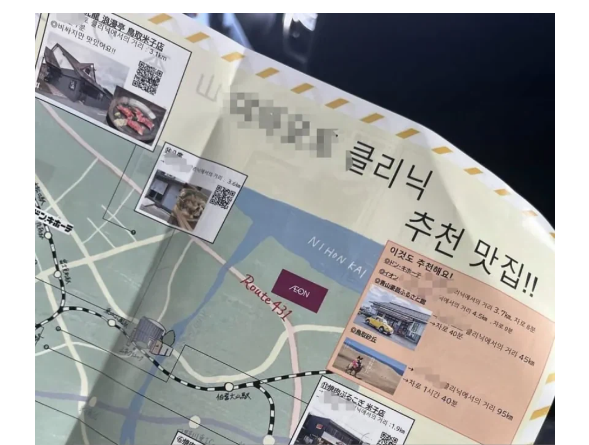

https://bbs.ruliweb.com/best/board/300143/read/77423146

일본 외진 곳에 있는 마운자로 싸게 팔아서 유명한 병원
병원 원장이 한국인들에게 자기 입맛기준
맛집 지도 만들어서 건네준다고 함
최후의 만찬 ㄷㄷㄷ
https://bbs.ruliweb.com/best/board/300143/read/77423146

일본 외진 곳에 있는 마운자로 싸게 팔아서 유명한 병원
병원 원장이 한국인들에게 자기 입맛기준
맛집 지도 만들어서 건네준다고 함
최후의 만찬 ㄷㄷㄷ
저기 24시간 편의점이 거의 없을정도로 촌동네.
온천물 1년에 2번 교체하는거 들키고 사장이 둔둔한 동네이기도 하고
여름엔 국지성 뇌우와 폭풍이 매우 심해서 돗토리나 이즈모쪽 놀러갔다 재래선 끊어져서 발묶이는곳인데
게와 해산물 요리가 엄청 싸고 맛있는곳이기도 함
주말 2박3일 휴양 및 식도락 목적으로 방문하긴 나쁘지 않은데 사전조사 잘 해야 갈만함
좋은데?
정보 개추
그래서 동네 이름이?
외진데 있어요~ 저도 원정다녀왔네요~~
요나고
에어서울 직항 있어서 금토일 가벼운 마음으로 다녀올만함
요나고 생각은 있었는데 이참에 한번 가야겠다 ㄳ
요나고쪽은 4박 5일 이상 체류하면서 심야시간까지 운영하는 나이트 라운지가 있는 호텔을 알아보는걸 추천함
공항입출국 + 요나고 + 사카이 미나토 지역을 첫날과 마지막날에 배정하고
마쓰에, 이즈모, 돗토리를 각각 1일씩 쓰는 jr패스권 사용해서 낮에 근교여행 하고 저녘때마다 요나고 내의 맛집투어 돌고 밤에는 라운지에서 야경보면서 술한잔 하고 숙소에 딸린 대욕장 노천탕에서 하루를 마무리 하면 생각보다 알차게 다녀올 수 있음
음식이 맛있고 손님이 많은 매장을 보면
일반 음식점들은 8~9시면 문을 닫고
라멘이나 이자카야도 대부분 11시 이전에 문을 닫으며
대중교통의 배차간격이 길고 막차시간이 빠른편이라
일자별 시간별 이동계획 정도는 미리 짜야됨
덕분에 돈많이 아꼇습니다 원장니뮤... 근데 이젠 일본 전국 배송이 다되서 앞으로 잘 안갈거가타요 ㅠㅠ
배송도 풀림??ㄷㄷ
원래도 됐음 싸게안풀렸을뿐
법적인 문제를 제외하면 일단 가능은 함
다만 이번에 통과된 개정안 시행되면 이슈되는순간 무조건 단속의지 보여주겠지
원래도있었는데 접근성이 약...간정도 후졌음 근데 이번 반입허용으로 접근성이 딸깍수준으로좋아짐
직구가 아니라 일본내 배송을 말하는거임
접근성이 떨어지는 시골제품 인터넷으로 구매후 도쿄 혹은 대마도로 배송시키고 가서 픽업하는방식
Ems도되면좋겠네
이게 진짜 경제에 활력이 도는 제대로된 매커니즘임 ㅋㅋㅋㅋ
반대로 우리가 싸게팔앗으면 ?
이게 한일공동경제 체제가 아니고 뭐란 말이냐!!!
모자이크 했는데 어딘지 읽힌다
왜 같은 비급여여도 가격차가 이리날까
일본정부가 건보지정으로 협상해서 받아낸 가격임. 시장이 크니까 됨
비급여 약가를 정부가 개입하냐 시장 자율에 맏기냐의 차이
건보지정으로 협상해서 받아낸게 아니라 니들 존나 잘파는데 가격 좀 낮춰서 팔으라고
단가 강제로 낮췄다고 함 물론 마운자로만 그러는 게 아니라 그냥 잘 팔리는 의약품이면
강제로 단가 낮추게 하는 법이 있어서 그런 듯
마슐랭 가이드
그와중에 NIHONKAI(일본해) 적혀있네 ㅋㅋ
로컬은 당연히 그래도 되는거고
국제표기를 병기하자는게 우리 주장임
장어 영어문도 보고오삼 자포니카도 그렇고 옜날부터 학회에 일본인들많아서 다저럼 병기표기라도 되야되는데
가격 공유해야지... 거기까지 갔으면
지피티 5초 딸깍하면 병원정보랑 가격표까지 다 나오는구만 핑프쉑 그정도는 좀 스스로 검색해라 임마
요나고 야마모토 크리닉 - 비교기과 및 미용피부과
JR 히가시야마역, 도보 약 20분
진료 : 월,화,목,금,토
09:00 ~ 12:30 , 15:00 ~ 18:00
마운자로 외에도 탈모약과 발기부전, 조루 치료약도 진료 및 처방가능.
25년 6월부터 온라인 비대면 진료를 멈추고 방문 후 대면진료와 처방만 진행중
1개월 분량 (4펜) 가격
2.5mg : 8천엔
5mg : 1.4만엔
7.5mg : 2.4만엔
10mg 이상 : 판매하지 않음
그리고 많은 일본병원들이 비만치유 목적의 마운자로 초진시 1개월을 처방해주고 재방문시 3개월 처방해주는 경우가 많다보니
아무 조건없이 약을 내어주는 대도시 유명 성지들을 방문하는게 아니라면
한국에서 처방받던 병원에 간단한 진료내용 및 처방과정과 현재 사용중인 마운자로 용량이 있는 영문소견서 하나 달라고 해서 가져가서 바로 3개월치 받아오는거 추천함
요나고 였구나 ㅎㅎ 거기도 후기도 몇개 봤었는데 고맙다 ㅎㅎ 4개월치는 받을수가 없어??
4개월치 가져오면 한달치는 세관에서 압수해감
가격 안풀어서 외화만 낭비하게 만드네 ㅋㅋ
제약사인 일라이 릴리가 한국회사인줄 아는 빡대가리가 여기 있네
어짜피 한국에서 고가에 처방받는 마운자로 약값도 외화로 빠져나가 ㅋㅋㅋㅋㅋㅋㅋㅋㅋ
일본에서 사는게 오히려 외화 유출이 적은거 모름?
한국에서 처방받는 마운자로 3개월치 160만원은 달러로 미국으로 빠져나가는거고
일본에서 처방받는 마운자로 3개월 7만엔이 일본을 거쳐 미국으로 가는거야
여기서 발생하는 차액이 100만원 정도 되지?
이중 4~50만원이 항공료니까 이건 한국기업에 주는거고
남는 50만원으로 숙박비랑 여행비 쓰는건데
요나고는 숙박비가 워낙 저렴해서 비수기때는 3박 4일에 10만원도 안하는 숙소가 널려있고
맛집투어 다녀도 1~20만원이면 끝나
여행까지 신나게 즐겼는데 한국에서 미국으로 직접 외화 유출하는거보다 20만원이 절약되네?
이쯤되면 일본으로 안가는게 병신 아님?
아 네 알려주셔서 고맙습니다
존나 외진곳인가본데 ㅋㅋㅋㅋㅋㅋㅋ